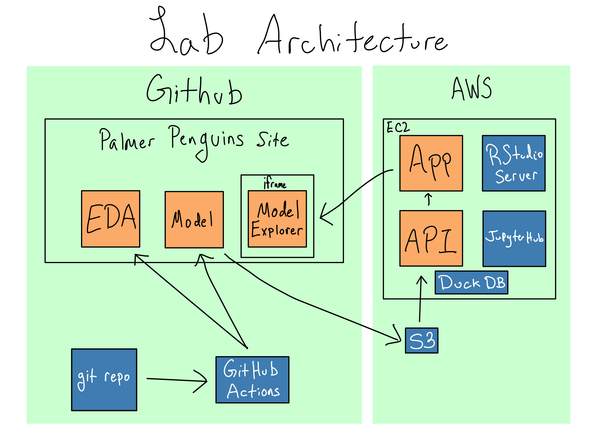

graph LR
A[I] -->|Wrote| B[DO4DS]
C[You] --> |Are Reading| B
B --> |Includes| D[Exercises]
D --> |Some Are| E[Mind Maps]
Introduction
Data science is pretty useless.
Maybe you started writing R or Python code because you love creating beautiful visualizations. Or maybe you are passionate about ecology or biostatistics or economics. Maybe you just like writing elegant code in R or Python.
Ultimately – frustratingly – these things don’t matter.
What matters is whether the output of your work is useful in affecting decisions at your organization or in the broader world.
That means you’re going to have to share your work by putting it in production.
Many data scientists think of in production as some mythical state of super computers running state-of-the-art machine learning models running over dozens of shards of data, terrabytes each. It definitely occurs on a misty mountaintop, and does not involve the google sheets, csv files, or half-baked database queries you probably wrangle every day.
But that’s wrong. If you’re a data scientist and you’re trying to put your work in front of someone else’s eyes, you’re in production. And if you’re in production, this book is for you.
You may sensibly be asking who I am to make such a proclamation.
In 2019, I left a role leading a data science team to join the Solutions Engineering team at Posit (then RStudio). The Solutions Engineering team helps our customers deploy, install, configure, and use Posit’s Professional Products.
As such, I’ve spoken with hundreds of organizations managing data science in production about what being in production means for them. And I’ve helped them to make their systems for developing and sharing data science products more robust with both open source tooling and Posit’s Professional Products.
I’ve seen organizations at every level of data science maturity. For some organizations, in production means a report that gets rendered and emailed around. For others, it means hosting a live app or dashboard that people come visit. For others, it means serving live predictions to another service from a machine learning model via an API.
Regardless of the maturity or the form, every organization wants to know that the work is reliable, the environment is safe, and that it’ll be available when people need it.
And so that’s what this book is about – all of the stuff that is not data science that it takes to deploy a data science product into production.
The good news is that there’s existing prior art here. DevOps is an outgrowth of software engineering that is primarily concerned with these problems and where we, as data scientists, can take some important cues.
DevOps for Agile Software
DevOps is a set of cultural norms, practices, and supporting tooling to help make the process of developing and deploying software smoother and lower risk.
If you feel like that definition is pretty vague and unhelpful, you’re right.
Like Agile software development, to which it is closely related, DevOps is a squishy concept. That’s partially because DevOps isn’t just one thing – it’s the application of some principles and process ideas to whatever context you’re actually working in. That malleability is one of the great strengths of DevOps, but can also make it difficult to pin down.
This squishiness is furthered by the ecosystem of companies enabling DevOps. There are dozens and dozens of companies proselytizing their own particular flavor of DevOps – one that (shocker) reflects the capabilities of whatever product they’re selling.
But underneath the industry hype and the marketing jargon, there are some extremely valuable lessons to take from the field.
To understand better, let’s go back to the birth DevOps.
As the story goes, the history of software development before the 1990s involved a waterfall development processes. In these processes, software developers would work with clients and customers to fully define requirements for software, plan the whole thing out, and deliver final software months or years later.
When the application was complete, it was hurled over the metaphorical wall from Development to Operations. IT Administrators in the Ops department would figure out the hardware and networking requirements, get it running, and keep it up.
Throughout the 1990s, software developers observed that delivering software in small units, quickly collecting feedback, and iterating was a more effective model.
In 2001, the Manifesto for Agile Software Development was published, giving a name to this philosophy of software development. Agile development basically ate the world and basically all software is developed using some form of Agile these days. These days, Agile work styles have extended far beyond software into other domains as well.
There are dozens of Agile software development frameworks you might’ve heard of like Scrum, Kanban, Extreme Programming, and many, many more. One commonality of these frameworks were really focused on software development. What happened once the software was written?
The old pattern clearly wouldn’t work. If you were doing new deployments multiple times a week – or even a day – you needed a complementary process to get that software deployed and into production.
DevOps arose as this discipline – a way for Dev and Ops to better collaborate on the process that would take software from development intor production. It took a little while for the field to be formalized, and the term DevOps came into common usage around 2010.
Processes and People
Throughout this book, DevOps refers to the knowledge, practices, and tools that make it easier, safer, and faster to put work into production. So, if you’re a software developer (and as a data scientist, you are) you need to be thinking about DevOps.
Most organizations also have a set of people and roles who have the permission and responsibility for managing the servers and software at your organization. Their titles vary widely by organization – they might be named Information Technology (IT), SysAdmin, Site Reliability Engineering (SRE), or DevOps.1
For the sake of simplicity, I’m going to use the term IT/Admin to refer to these people and teams throughout this book.
Fundamentally, DevOps is about creating good patterns for people to collaborate on developing and deploying software and those patterns vary by organization. That means that DevOps can and should be adapted to your organization.
As a data scientist, you are the Dev, and so a huge part of making DevOps work for you is finding some IT/Admin counterparts with whom you can develop a successful collaboration. In some cases that will be easier than others. Here are three patterns that are almost always red flags – mostly because they make it hard to develop relationships that can sustain the kind of collaboration DevOps necessitates.
At some large organizations, IT/Admin functions are split into small atomic units like security, databases, networking, storage, procurement, cloud, and more. This is useful for keeping the scope-of-work manageable for the people in that group – and often results in super deep technical expertise – but also means that it can be slow to get anything done because you’ll need to bring people together from disparate teams to actually get anything done.
Some organizations have chosen to outsource their IT/Admin functions. While the individuals in those outsourced teams are often quite competent, building relationships can be difficult. Outsourced IT/Admin teams are often in India, so it can be hard to find meeting times with American and European teams. Additionally, turnover on projects and systems tends to be high at outsourced IT/Admin organizations. That means that institutional knowledge tends to be thin and relationships can’t be relied on long term.
Some organizations, especially small or new ones, there isn’t an IT/Admin function. At others, the IT/Admins are preoccupied with other tasks and don’t have the capacity to help the data science team. This isn’t a tragedy, but it probably means you’re going to have to become the IT/Admin if you want to get anything done.
Whether your organization has an IT/Admin setup that facilitates DevOps best practices or not, hopefully this book can help you take the first steps towards making your path to production smoother and simpler.
About this book
Over the course of engaging with so many organizations, I’ve seen which patterns work to grease the path to production for data scientists and which ones tend to impede it.
Many of those patterns are inspired by traditional DevOps, but they’re not identical because of differences between pure software development and data science (more on that in ?sec-1-intro).
The first goal of this book is to equip you with mental models you can apply in your own work and your own organization to create data science projects that are easier to take to production.
The second goal of this book is to give you some background on relevant IT/Admin knowledge.
IT Administration is an older field than DevOps or data science, and it’s full of arcane language and technologies. This book will equip you with the vocabulary to talk to the IT/Admins at your organization and some basic skills of how to do IT/Admin tasks yourself.
The book is divided up into four sections.
Section 1 is about data science best practices that can make it easy to take your R and Python work into production.
Section 2 is an introduction to the tools IT/Admins use in their work like the command line, bash, and Docker.
Section 3 is a walkthrough of basic concepts in IT Administration that will get you to the point of being able to host and manage your own small server.
Section 4 is about how all of what you learned in Section 3 changes when you go to enterprise scale.
Comprehension Questions
Each chapter in this book includes comprehension questions. As you get to the end of the chapter, take a moment to consider these questions. If you feel comfortable answering them, you’ve probably understood the content of the chapter pretty well.
Alternatively, feel free to jump ahead to them as you’re reading the chapter. If you can already answer them all, you can probably skip that chapter’s content.
Mental Models + Mental Maps
Throughout the book, I’ll talk a lot about building a mental model of different concepts.
A mental map is way to represent mental models.
In a mental map, you draw each of the nouns as nodes and connect them with arrows that are labelled to explain the relationship.
Mental maps are a great way to test your mental models, so I’ll suggest them as comprehension questions in many chapters.
Here’s an example about this book:
Note how every node is a noun, and the edges (labels on the arrows) are verbs. It’s pretty simple! But writing down the relationships between entities like this is a great check on understanding.
Labs
Many chapters also contain labs. The idea of these labs is to give you hands-on experience with the concepts at hand.
These labs all tie together. If you follow the labs in this book, you’ll build up a reasonably complete data science platform that includes a place for you to work, a way to store data, and a deployment environment.
Palmer Penguins is a public dataset meant for demonstrating data exploration and visualization. We’re going to pretend we care deeply about the relationship between penguin bill length and mass. We’re going to build up an entire data science environment dedicated to exploring that relationship.
The front end of this environment is going to be a website that contains an app that allows you to get predictions from a machine learning model of a penguin’s mass based on bill length and other features. We’re also going to include pages dedicated to exploratory data analysis and model building on the website.
On the backend, we’re going to build a data science workbench on an AWS EC2 instance where we can do this work. It will include RStudio Server and JupyterHub for working. It will additionally host the machine learning model as an API and the Shiny app that appears on the website.
The whole thing will get auto-deployed from a git repo using GitHub Actions.
From an architectural perspective, it’ll look something like this:

If you’re interested in exactly which pieces get completed in each chapter, check out Appendix B.
I think a lot of DevOps experts would argue that you’re doing DevOps wrong if you have a standalone DevOps team.↩︎